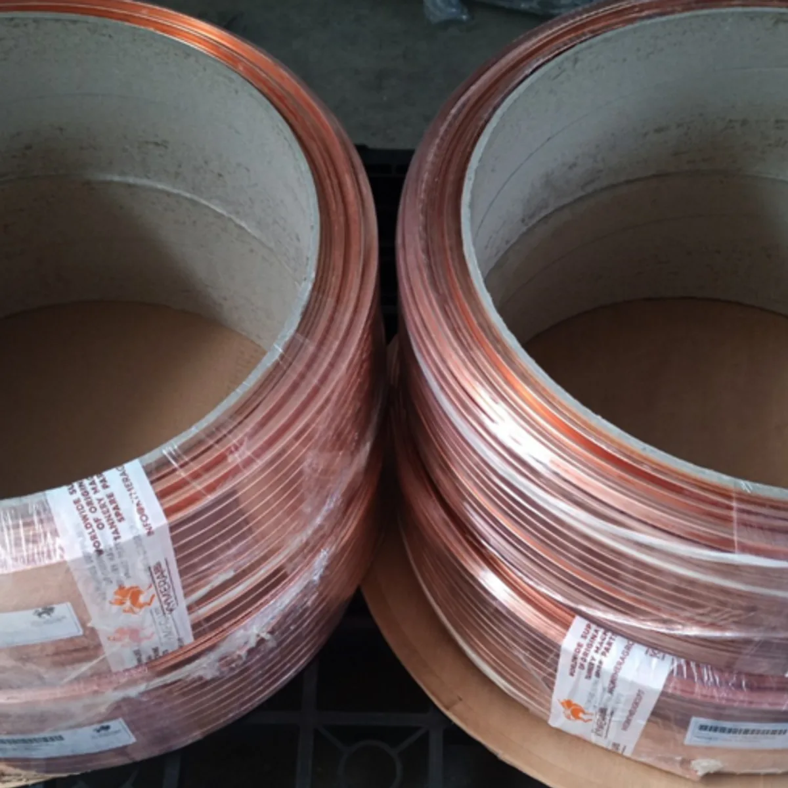
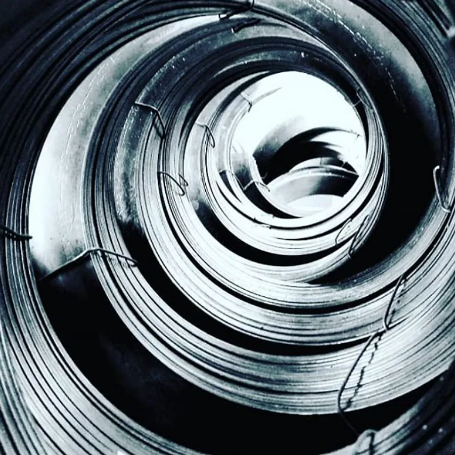
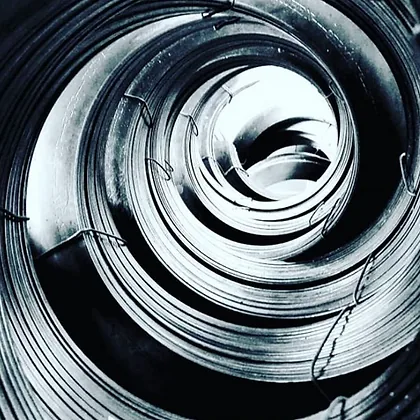
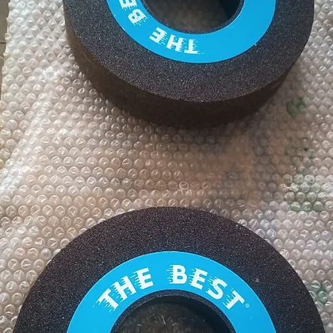
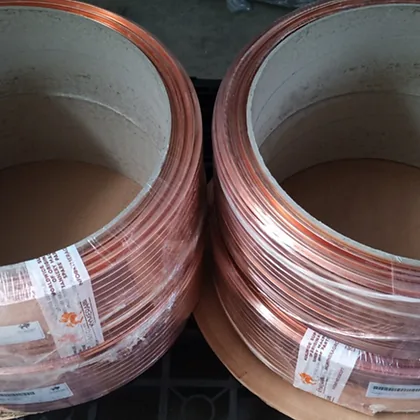
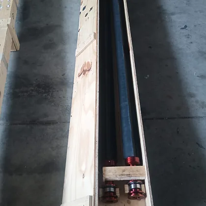
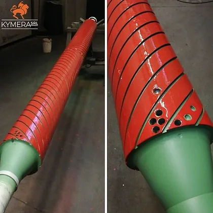

Shaving
Machine
Parts
Original and compatible spare parts and consumables for leather shaving machines. Shaving blades, The Best grinding stones, copper kulking tape, leather detachers, blade cylinders and every wear part — checked before they ship.

Reduce Downtime
Shaving consumables ready to fit when your blades need replacing. Keep blades, stones and copper tape on the shelf and your shaving line is back in production in minutes, not days.
Original Quality, Fair Prices
Original consumables from The Best and high-quality compatible parts on wear items — no minimum order quantity, fair prices, and the right specification for your machine.
Every Part Tested Before It Ships
Strict dimensional and visual checks on every shaving blade, stone and cylinder before dispatch. If it doesn't meet spec, it doesn't leave our warehouse.
Spare Parts for
Leather Shaving Machines
Kymera Group supplies original and compatible spare parts for leather shaving machines used in tanneries worldwide. We stock components compatible with the most widespread shaving machine brands — Rizzi, Mosconi, Poletto, Aletti, Cartigliano, Svit, Mercier and Camoga.
From the consumables that hit the leather every cycle — shaving blades, The Best grinding stones, copper kulking tape — through to structural wear parts like blade cylinders, pressure cylinders, leather detachers and transport rollers, we source and supply the right component for your specific machine model. Every part is dimensionally checked before shipping, so you can order with confidence and minimise downtime on the production floor.

The Complete
Shaving Parts Catalogue
From cutting consumables to blade cylinders, pressure rollers and detachers — everything your shaving machine needs, sourced from leading manufacturers and quality-checked before dispatch.

Shaving Blades
Sharp, consistent shaving blades for helical blade cylinders — the cutting edge of every shaving cycle. Original and compatible references in stock.
Request a Quote
Grinding Stones — The Best
The Best grinding stones for in-machine sharpening of shaving blade cylinders. The industry reference for consistent edge geometry.
Request a Quote
Copper Kulking Tape
Copper kulking (caulking) tape used to seal and protect the shaving cylinder during re-blading and sharpening operations.
Request a Quote
Leather Detacher
Leather detachers for clean release of the hide from the shaving cylinder — protects the grain and improves throughput.
Request a Quote
Blade Cylinder
Helical blade cylinders for shaving machines — re-bladed, balanced and ready to install on the major shaving machine brands.
Request a QuoteRubber Pressure Cylinder
Rubber pressure cylinders for consistent hide feeding and even shaving thickness on every major shaving machine brand.
Request a QuoteTransport Rollers
Transport rollers for shaving machines — precision-machined to original specification for reliable hide feeding.
Request a QuoteDoctor Blades & Scrapers
Doctor blades and scrapers to keep shaving cylinders and feeding rollers clean — prevent build-up, protect the surface, keep shaving consistent.
Request a QuoteRe-Blading & Sharpening
A shaving cylinder is the heart of the machine: helical blades wrapped around a steel core, sharpened in place by a grinding stone and protected during service by copper kulking tape. Here is the cycle on the production floor.
Inspect the Cylinder
Check the blade cylinder for wear, edge geometry and balance. Identify which blades, stones and tapes you'll need before stopping the line.
Apply Copper Kulking Tape
Seal and protect the cylinder around the blade seats with copper kulking tape — keep grit and abrasive debris away from sensitive surfaces.
Sharpen with The Best Stones
In-machine sharpening with The Best grinding stones restores consistent edge geometry across the full width of the cylinder.
Replace & Run
Swap in new shaving blades or a fresh blade cylinder, fit detachers and pressure rollers, and run a test hide to confirm thickness consistency.
Your Questions,
Answered
Which leather shaving machine brands do your spare parts fit?
Our spare parts are compatible with the most widespread brands, including Rizzi, Mosconi, Poletto, Aletti, Cartigliano, Svit, Mercier and Camoga. Tell us your machine model and we will confirm the correct part for you.
Do you supply original or compatible shaving machine parts?
Both. We supply original parts from leading consumables manufacturers such as The Best for grinding stones, alongside high-quality compatible parts on wear items where compatible replacements deliver excellent performance at a better price.
What is copper kulking tape used for?
Copper kulking (caulking) tape is used to seal and protect the shaving cylinder during blade sharpening and re-blading operations. It keeps grit and debris away from sensitive areas and is a consumable on every shaving machine workshop.
Can you re-blade or rebuild a shaving cylinder?
Yes. We supply ready-to-install helical blade cylinders for the major shaving machine brands and we can advise on the right specification for your machine model and hide type.
How quickly can you ship shaving machine spare parts?
We stock the most common wear parts and consumables for fast dispatch. Lead times for less common parts depend on the item — contact us with your machine model and required part for a precise delivery estimate.
Can you help identify the right part for my shaving machine?
Yes. Send us your shaving machine brand, model and a photo or reference number of the worn part — our team will identify the correct replacement and quote it for you.
Send Your Request
Tell us your shaving machine brand and model, the part you need and the quantity — we'll come back to you with the right component, the right price, and a clear lead time.